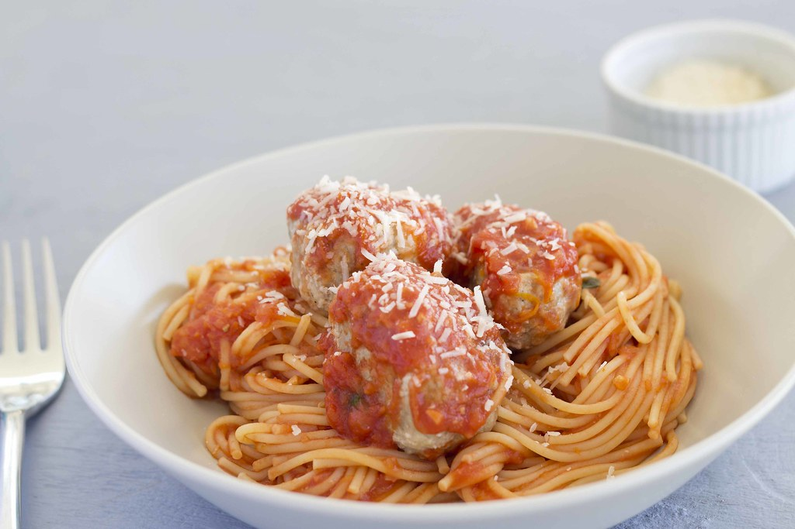

Spaghetti and Meatballs

Description
Spaghetti and meatballs is a timeless comfort dish that brings together tender, juicy meatballs and a rich,
savory tomato sauce over a bed of perfectly cooked spaghetti. The meatballs are typically made from a mixture of
ground beef, breadcrumbs, eggs, garlic, and herbs like parsley and oregano, then browned and simmered in the
sauce to soak up flavor and stay moist.
The tomato sauce, often slow-cooked with onions, garlic, crushed tomatoes, and Italian seasonings, complements
the hearty meatballs and coats the pasta beautifully. Served with a sprinkle of Parmesan and fresh basil,
spaghetti and meatballs is a satisfying, family-friendly meal that feels both
homey and celebratory.
Ingredients
For the Meatballs
- Ground Beef (or a mix of beef and pork) (1 lb)
- Breadcrumbs (1/2 cup)
- Parmesan Cheese, grated (1/4 cup)
- Garlic, minced (2 cloves)
- Fresh Parsley (or dried parsley) (1/4 cup fresh or 1 tbsp dried)
- Egg (1 large)
- Salt (1/2 tsp)
- Black Pepper (1/4 tsp)
- Olive Oil, for browning (1 to 2 tbsp)
For the Sauce:
- Olive Oil (2 tbsp)
- Onion, finely chopped (1 small)
- Garlic, minced (3 cloves)
- Crushed Tomatoes (1 can, 28 oz)
- Dried Oregano (1 tsp)
- Salt (1/2 tsp, adjust to taste)
- Black Pepper (1/4 tsp)
- Red Pepper Flakes (optional) (1/4 tsp)
- Fresh Basil or Parsley, for garnish (optional)
For the Pasta:
- Spaghetti (12 oz to 1 lb)
- Salt, for boiling water
Steps
- Bring a large pot of salted water to a boil. Cook spaghetti according to package instructions until al
dente. Drain and set aside.
- In a large bowl, mix together ground beef, breadcrumbs, Parmesan cheese, garlic, parsley, egg, salt, and
black pepper until well combined. Form into meatballs.
- Heat olive oil in a large skillet over medium heat. Add meatballs and brown on all sides. Remove and set
aside. (They don't need to be fully cooked yet.)
- In the same skillet, sauté chopped onion until soft. Add minced garlic and cook briefly until fragrant.
- Add crushed tomatoes, oregano, salt, black pepper, and red pepper flakes (if using). Stir to combine and
bring to a simmer.
- Return meatballs to the sauce and simmer over low heat until meatballs are fully cooked and the sauce has
thickened.
- Toss spaghetti with the sauce and meatballs, or serve pasta topped with sauce and meatballs. Garnish with
fresh basil or parsley and extra Parmesan if desired.